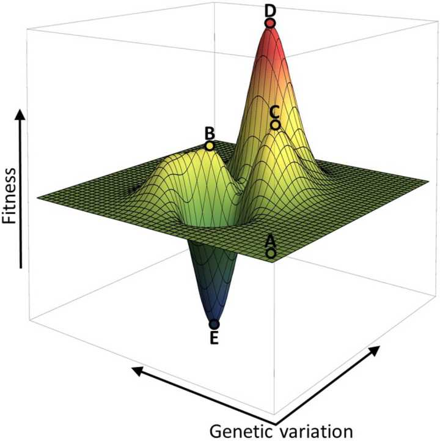

生物演化中，「弱者」是否有存在的价值？
作者：Lee Sam - 知乎
按：本文不是在讨论“社会达尔文主义”。
进化论所提出来的基因改进机制，被研究计算机的人借鉴去，做成了一种叫遗传算法的东西，专门用来找一些很复杂（多元，不单调甚至不连续）的函数的最大值。通过研究这种算法的特征，其实可以理解生物作为一个群体为啥要长期保留一些弱者。
遗传算法的机制很简单：随机生成一些初始解，然后衡量一下他们有多『强』。把最强的一半拿出来，让他们进行随机混合（即交配），产生新的一代解（子女）。在新一代的解里再去掉一半的弱者（淘汰），如此反复一代代进化，解的质量会逐步提高。这种算法相当强大，可以拿来优化一些相当复杂的函数，甚至可以写诗。
写过遗传算法的都知道，有种进化法则叫精英主义，即在每一代的解中选出最优秀的一部分，将他们认定为精英。精英有特权，他们的基因可以直接流传到下一代。不需要交配，更不会变异。这种方法可以极大加快解的收敛速度（你可以理解为提升群体的基因质量），但如果使用过头（即让精英占比过多），最后解出来的解极有可能不是全局最优解。因此每一代进化时，不但精英占比不能过高，还要强行拉一群强者出去变异。哪怕一部分最后变成了弱者，经过多代进化后群体的质量反而会高于没有变异机制的群体。原因很简单：基因多样性增加了。
要知道，基因变化和其携带者的强弱关系不是单调的。用不断增加强者的基因占比这种『爬山』式的贪心优化方法，最后进化出来的不一定是强的。因为这种解法能保证你登上一个山顶，但最强的基因却可能在隔壁山。两山间隔着一个山谷，而弱者极有可能就是这些山谷的探索先锋。太严格的淘汰弱者，会极大的限制住整个群体的基因的进化空间。
下面这个图形象的描述了这个过程：面对天文数字般的排列组合，基因进化就像一群盲人在下图中的的地形上爬山。他们从A点开始，每人随机往一个方向走一步。走完以后大家互相通报高度。高度的最低的一半自动灭绝，高的一半则每人生俩孩子继续爬。如果每代只让位于最高处的几个精英生一堆孩子，而不给弱者繁衍的机会，那么他们最终极有可能到了C点这个假山头后就不走了，因为无论往哪个方向走都会立刻被淘汰掉。只有允许部分弱者存活，他们才可能发现真正的山峰-D点的存在：

更要考虑的是，遗传算法中，目标函数（基因强弱的认定标准）是一直不变的，而大自然里生物生存的环境却是随时在变化的。今天的最优解到了明天可能就是个烂解。上图里的山峰搞不好哪天就塌了，此时弱者则可以快速发现新的山峰。恐龙的灭绝就是这样的一个例子：一开始仗着巨大的体积称霸自然界，结果地球被陨石撞了以后，大家都开始比能量使用效率，这时之前被欺负的小型动物反而占了优势。在这种变化多端的环境下，如果随意把弱者灭了，等于是牺牲了自己的环境适应能力，整个群体反而更容易灭绝。
有人在面对这个问题时，喜欢使用”强弱是相对的”，”强者需要弱者衬托”，”强弱没有绝对定”等措辞来为弱者辩护。遗传算法则告诉我们，哪怕自然界残酷到有一种永恒不变的法则能算出一个生命的绝对强弱，弱者仍然是一个群体长期繁衍的必要元素。
按：本期的电子刊有遗传算法的介绍。